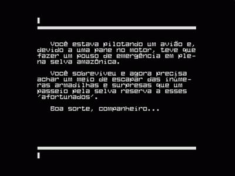

Adventures são jogos em que, ao invés de você tornar-se um destruidor de teclados ou ter que fazer malabarismos com o joystick para vencer, bastará você usar toda sua astúcia, criatividade e acima de tudo persistência para vencer os diversos desafios que só um jogo do tipo adventure pode oferecer.
Normalmente, quando você inicia uma aventura, são dadas informações sobre o mundo em que se acaba de entrar: este pode ser um lugar exótico na Terra, um planeta distante, ou um local imaginário. O jogo pode acontecer em épocas diversas. Geralmente são dadas informações como: quem governa o lugar; quem é você e como fazer para atingir o objetivo e ganhar o jogo. Depois disso, aparecerá uma primeira descrição do local. Algo parecido como a tela abaixo:
Agora, você tem que decidir o que fazer. Será conveniente usar a colher para misturar o líquido ou mesmo experimentá-lo ? Não seria melhor deixar isso de lado? Ou talvez fosse melhor procurar um recipiente para levar um pouco do líquido verde com você?
Se decidir usar a colher, digite algo assim: PEGUE COLHER. A resposta do computador será: Ok ou Você ainda não pode pegar a colher!, ou alguma outra mensagem.
Em cada etapa do jogo você deve informar ao computador exatamente o que pretende fazer. A forma de fazer isso dependerá apenas do tipo de jogo. A maioria deles espera você digitar seus comandos no computador através de um verbo seguido de um substantivo; por exemplo:PEGUE COLHER.
Alguns jogos aceitam sentenças completas, mas isso é uma exceção à regra. Nestes jogos você poderia ordenar algo parecido como: ABRA A PORTA COM A CHAVE.
A maioria dos adventures conseguem entender abreviaturas das palavras válidas. Por exemplo, é muito comum, num adventure, digitar N em vez de NORTE. As direções podem ser pontos cardeais (N, S, L e O) ou colaterais (SE, SO, NE e NO), ou instruções como PARA CIMA, PARA BAIXO.
Um adventure típico é baseado numa grade de locais possíveis, que assume geralmente a forma de um quadrado. Dependendo da imaginação do programador, esses lugares podem representar ambientes tão variados como os quartos de um castelo ou os subterrâneos de uma mina.
A idéia de criar adventures surgiu da popularidade, nos EUA e Inglaterra, dos jogos de ação não-computadorizados, tais como Dungeon & Dragons, e ao mesmo tempo, do desejo de se utilizar os computadores para fazer coisas mais interessantes do que processar dados.
Por outro lado, os jogos não-computadorizados não atendiam plenamente a demanda do público, que exigia emoções cada vez mais fortes. Esta demanda só foi satisfeita pelos adventures programados para o computador.
O primeiro adventure destinado a computadores foi escrito para máquinas de grande porte, em linguagem FORTRAN, e não em BASIC. O programa ocupou aproximadamente 300 k de memória. Chamava-se Colossal Caves (Whille Crowther e Don Woods). Apesar do seu tamanho e complexidade, esse jogo conquistou milhares de usuários de computadores nos Estados Unidos e no Canadá; eles passaram a dedicar suas noites a tentar decifrar os mistérios do jogo.
Na realidade, a popularização dos adventures começou quando um jovem programador chamado Scott Adams desenvolveu em 1978, um jogo para microcomputadores da linha TRS 80 e provou que era possível escrever uma aventura razoável em um espaço de memória bem menor.
Com o surgimento de novas tecnologias e o aumento da capacidade de processamento dos microcomputadores, foram surgindo novos e cada vez mais sofisticados adventures com recursos gráficos e sonoros. Desde então, cada vez mais pessoas vem se rendendo ao fascínio dos adventures.
Não será você o próximo?!
Existem basicamente dois tipos de adventures:
Os que utilizam somente textos na tela para orientar o jogador. Desde tipo eram as primeiras aventuras que surgiram para grandes computadores e as criadas por Scott Adams. Os adventures deste tipo são ainda muito populares.
Um bom exemplo de Adventure de texto é o Amazônia, o mais conhecido adventure brasileiro.
Autoria de Renato Degiovani

O outro tipo de jogo são os adventures gráficos que utilizam ilustrações na tela para situar, orientar e motivar o jogador. Entretanto, os gráficos precisam ser muito sofisticados para competir com a imaginação do jogador. Por exemplo, você poderia conceber um monstro bem mais horripilante de que seria capaz de reproduzir, mesmo nas telas gráficas mais avançadas. Portanto, é bem possível que os gráficos "estraguem" sua diversão.

O Adventure O Conde de Monte Cristo,de autoria de C.Fabiano,é uma boa amostra de Adventures Gráficos
Alguns adventures, ao invés de aceitarem comandos escritos pelo jogador, apresentam na tela um menu com as diversas ações possíveis, como por exemplo, examinar, pegar, largar, entrar, sair, usar, entre outras. Isto porém limita muito as possibilidades do jogador usar toda a sua astúcia e esperteza para resolver os desafios lançados pelo adventure.
Certas adventures apresentam uma contagem de pontos, sempre que uma etapa da busca é completada. Desse modo, o jogador pode avaliar seu desempenho, caso tenha sido derrotado em algum estágio. Outros não fornecem qualquer dica de como o jogador está indo ou da proximidade do desfecho.
Seja qual for o caso, porém, a diversão maior está na solução de uma série aparentemente infinita de charadas, depois da qual a aventura chega ao fim. Alguns costuman durar muitas horas ou dias, podendo ser interrompidos e retomados a qualquer momento.
Normalmente, existe apenas uma solução para um adventure:
por exemplo, encontrar um pote de ouro e levá-lo para o fim do arco-iris, ou
matar um guerreiro medieval e escapar ileso, etc. Até chegar a esse objetivo, o
jogador precisa resolver toda uma série de problemas. O mais provável é que ele
tenha que fazer muitas tentativas diferentes até concluir a aventura.
Existem algumas regras básicas e dicas que o ajudarão a resolver mais rapidamente a maioria dos jogos. Quase todos os objetos que você encontrar nas aventuras serão de alguma utilidade. A existência de muitas pistas completamente falsas representa um desperdício de memória, embora seja necessário estar sempre atento para alguns objetos que podem ser "facas de dois gumes". Por exemplo, o jogador poderia estar carregando uma sacola com moedas de ouro para passar pelo pedágio de uma ponte; caso ele se decidisse a nadar no rio, porém, o peso delas o faria afundar. Como regra geral, é aconselhável tentar carregar o maior número possível de objetos, mas algumas vezes apenas uma parte deles lhe será realmente útil.
Quase sempre, a maioria dos objetos é usada somente uma vez durante uma aventura. Mas há exceções: uma espada, por exemplo, poderia ser usada muitas vezes para derrubar gigantes, dragões ou bandidos. Dessa forma, se você for obrigado a limitar o número de objetos que leva consigo, deve ter em mente que é mais seguro descartar os que já foram usados uma vez.
Outra regra geral: desenhe sempre um mapa, marcando nele os nomes dos aposentos, a posição dos sentinelas e dos objetos distribuídos pelos quartos, todas as entradas e saídas com suas direções e outros pontos de referência que possam ser úteis. O mapa fará você economizar tempo e esforço quando estiver retornando para algum ponto anterior - manobra que você repetirá várias vezes durante o jogo. Se tiver que abandonar algum objeto, por não poder carregar tudo, não se esqueça de marcar a posição dele no mapa. A importância do mapa está em que ele lhe permitirá ter certeza de que explorou todas as possibilidades da aventura, o que, em muitos casos, salvará sua "vida".
Certos jogos permitem que você peça um inventário do está carregando. Assim, quando estiver diante de uma charada, procure saber exatamente o que tem em mãos, digitando INVENTÁRIO, LISTAR , ou algo parecido, dependendo do adventure.
Há jogos ainda que permitem ao jogador pedir ajuda. A forma de fazê-lo, varia, mais uma vez, conforme o conteúdo da aventura. Freqüentemente, porém, você obterá algo assim, em reposta ao seu pedido: NENHUMA AJUDA POSSÍVEL.
Alguns jogos seguem cuidadosamente o enredo de um livro específico. Nestes casos, é altamente recomendável ler o livro em questão. Outros jogos inspiram-se apenas em alguns capítulos ou idéias de algum romance ou filme famoso. Assim, se você encontrar numa aventura algum elemento que o faça recordar um texto literário ou filme e tiver dificuldades para resolver um determinado problema, tente encontrar a reposta vendo o filme ou lendo o livro.
Quando você digitar uma frase e o computador responder que isto não é possível, não quer dizer que a ação seja realmente impossível. Tente reescrevê-la de maneiras diferentes. Por exemplo: o programador pode ter usado no jogo a palavra POLIR, em vez de LUSTRAR.
Uma última dica: se o jogo permitir o uso do comando GRAVAR (ou SAVE) em algumas etapas, e você estiver prestes a enfrentar um grande perigo, então armazene a aventura no estágio em que ela se encontra, antes de dar o passo decisivo, pois, se você for "morto", poderá voltar atrás e continuar a partir do ponto em que parou.
O sistema MSX é o melhor e mais fantástico micro de 8 bits já produzido e mesmo após mais de uma década sem ser fabricado ainda mantém uma legião de fãs espalhadas pelo mundo todo.
O padrão MSX foi lançado entre 1983 e 1984 através; de uma união entre a Microsoft e algumas das maiores empresas japonesas no ramo da eletrônica digital (Sony, Sanyo, Pionner, Mitsubishi, Hitachi, Casio, Yamaha, JVC, Cannon, Toshiba entre outras).
Tudo começou quando a Spectravideo, empresa sediada em Hong Kong, solicitou a ASCII/Microsoft japonesa para desenvolver o Basic de um novo microcomputador que ela pretendia produzir. Kazihuro "Kay" Nishi, o presidente da Microsoft interessou-se pelo projeto e começou a dar palpites na parte de hardware. Criou-se então o SV-318, um micro que nunca foi lançado no mercado americano, mas que serviu de embrião para o MSX.
Nishi sabia do interesse das empresas japonesas de participar do crescente mercado mundial de micros. Se cada uma, porém, lançasse seu próprio sistema (o que era muito comum na época), as chances de sucesso seriam bastante limitadas. Ele propôs então o MSX como padrão a ser adotado pelas empresas japonesas para entrar na briga. Desta forma, todos os programas e periféricos desenvolvidos para um micro funcionariam em qualquer outro do mesmo sistema. Mesmo que as marcas fossem diferentes. E o esforço de marketing de todas as empresas seria somado para vender um só sistema: o MSX. E mais, todas as melhorias futuras a serem introduzidas no MSX, respeitariam a compatibilidade com o padrão original, resquardando o consumidor.
O padrão MSX espalhou-se pelo mundo como uma verdadeira epidemia e é claro, chegou ao Brasil (com os modelos Expert da Gradiente e o Hotbit da Sharp).
Em pouco tempo surgia a segunda geração dos micros MSX, o MSX 2. Logo depois o MSX 2+ e por último o MSX Turbo R, evoluções estas que não foram produzidas no Brasil em escala industrial. Graças a criatividade e a iniciativa de pequenas empresas nacionais "kits" de conversão dos MSX 1 para o MSX 2 e MSX 2+, foram produzidos no Brasil, mas mesmo assim, a grande maioria dos usuários brasileiros nunca colocou as mãos em um micro da segunda geração MSX.
|
Restropectiva dos principais acontecimentos MSX no mundo(*) |
|
|
Jun/1983 |
Lançado oficialmente o padrão MSX |
|
Jan/1984 |
Lançado os MSX da Sony, Sanyo, Panasonic, JVC, Yamaha, Pionner,Cannon. |
|
Maio/1984 |
Lançado o primeiro drive de 3.1/2" do mundo HBD-50. Uma tecnologia desenvolvida pela Sony |
|
Dez/1984 |
Lançado o MSX portátil da Casio. |
|
Maio/1985 |
Lançado o MSX2 |
|
Ago/1986 |
A empresa japonesa lança dois cartuchos para conversão dos MSX em MSX2. É o Version Up Apdater |
|
Jul/1987 |
A Mitsubishi lança o MSX ML-TS2H, o primeiro MSX voltado para comunicação. Incorporando um modem e um telefone na parte superior do gabinete. |
|
Set/1988 |
Lançado o MSX 2+ |
|
Jul/1989 |
Lançado a primeira interface para discos rígidos de 20 e 40 MB. |
|
Dez/1989 |
Lançado um digitalizador de SCREEN 12/8 externo da Sony e um Scanner de mão. |
|
Out/1990 |
Lançado o MSX Turbo R, o primeiro MSX de 16 bits. |
(*)Fonte Revista CPU-MSX número 21
Apesar do sucesso do sistema MSX, os fabricantes começaram a abandonar o padrão. Começava a popularização dos "PC's", que apesar de seram inferiores ao MSX se comparados com seus recursos gráficos e sonoros, tinham um apelo mais "profissional". Experimente visitar a página MSX - Realidade Desconhecida e veja porque. (http://skyscraper.fortunecity.com/klamath/892/msxmenu.htm).
Apesar de abandonados, muitos usuários do MSX no mundo todo não abandonaram seus maravilhosos micros e, após algum tempo, com a democratização da internet e a popularização dos emuladores, começa a surgir uma verdadeira comunidade virtual MSX, que cresce a cada dia.
Dúvida? Experimente então digitar MSX nas diversas ferramentas de busca disponíveis na internet e você se assustará com a quantidade de páginas dedicadas a esse inesquecível micro.
Acompanhe a partir de agora, através do tutorial extraído da coleção Input, a criação passo a passo de um adventure em MSX-Basic. Depois, é só dar asas a imaginação e criar suas próprias aventuras.
Antes de programar um jogo, é importante elaborar detalhadamente o roteiro, para evitar dificuldades posteriores, como erros e pontos obscuros a serem esclarecidos.
Em primeiro lugar o programador precisa criar um "mundo" que combine com a estrutura básica do roteiro. Este mundo compõe-se de uma série de objetos, cada qual destinado a desempenhar um papel específico. Além disso, deve criar alguns mistérios e problemas para o jogador resolver. Não é necessário fazer tudo isso de uma vez: à medida que se pensa na história, seus contornos vão se tornando mais nítidos, o que facilita a definição dos detalhes. Comece, portanto, rascunhando o roteiro básico.
Nosso jogador encontra-se em péssima situação financeira e, por isso, sai em busca do fabuloso olho inca (de altíssimo valor), escondido em algum lugar do mundo da aventura. Infelizmente, a Secretaria da Receita enviou um fiscal para acompanhar o caso. O papel desse personagem é bastante semelhante ao do pirata de outras aventuras, ou seja, cabe-lhe arruinar o infeliz jogador. Sua aparição pode acarretar dois fatos. Se o jogador estiver levando consigo um objeto, o fiscal o confiscará para amortizar sua enorme dívida com a Secretaria. Caso o jogador não tenha encontrado nenhum objeto (não podendo portanto pagar), o fiscal o prenderá numa masmorra.
Este é o esquema básico da aventura. Resta agora trabalhar alguns detalhes, por exemplo, os objetos que serão encontrados na busca. No nosso jogo, decidimos contrariar a regra geral de que todos os objetos devem ser úteis ao desenvolvimento da aventura. Desta vez, haverá um objeto sem nenhuma utilidade na busca empreendida pelo jogador: trata-se de algo pesado (um tijolo), que irá causar a morte de quem tentar atravessar o rio a nado, carregando-o.
O objeto mais importante de todos é o olho. Para aumentar o interesse do jogo, convém imaginar uma maneira de disfarçá-lo ou escondê-lo. Poderíamos colocá-lo dentro de um baú ou de uma catacumba, mas existem soluções mais sutis para enganar o jogador. Assim, em vez de esconder o olho num lugar que obviamente contém algo de valor, vamos deixá-lo dentro de um saquinho de bolas de gude. O aventureiro não irá a lugar nenhum se tentar jogar com as bolinhas de gude!
Um dos artifícios favoritos em jogos de aventura é o quarto escuro, no qual todas as coisas horríveis podem acontecer. Este adventure não será uma exceção. Sem a lâmpada - que deverá descobrir em algum misterioso lugar - o pobre aventureiro não encontrará as saídas, ficando em péssima situação.
Talvez isso seja um tanto injusto já que o jogador não receberá nenhum aviso do perigo iminente, nem terá condições de sair do quarto escuro, a não ser que tenha encontrado a lâmpada. Para dar uma melhor oportunidade ao aventureiro, permitindo-lhe enfrentar pelo menos um dos perigos - o fiscal - uma arma de fogo estará escondida em algum lugar.
Finalmente, para aumentar a diversão, haverá uma sala do trono e uma corrente. A sala do trono não é exatamente o que parece. Na verdade, o trono em questão se transforma num simples sanitário, se o jogador não estiver de posse do olho. E, caso puxe a corrente, provocará uma descarga que o fará desaparecer, tirando-o mais depressa da aventura.
Falta ainda estabelecer um dos principais elementos do jogo: as condições necessárias à vitória. Não existe saída evidente do mundo da aventura e boa parte do quebra-cabeças consiste em descobrir como escapar com a peça do totem. Assim, para ganhar o jogo, o aventureiro obviamente precisará tem encontrado o olho - não apenas o saquinho de bolas de gude. Para dificultar um pouco mais, ele deverá também estar na sala do trono. Puxar a corrente desta vez não fará com que ele entre pelo cano!
Transformar a saída em risco, sob condições diferentes, apresenta a vantagem de desencorajar o jogador a tentá-la constantemente; desta maneira prolonga-se o jogo todo.
Antes de começar o mapeamento, convém fazer uma recapitulação, listando os elementos até agora envolvidos no Adventure. Assim, não se corre o risco de perder o fio da meada.
De acordo com o roteiro elaborado, temos:
Até aqui, fixamos apenas três dos locais do adventure, em função do que neles deve acontecer. Podemos muito bem, neste ponto, tomar novas decisões. Mas, seja como for, o próximo passo consistirá em encaixar todos os elementos num mesmo mapa do mundo da aventura.
O primeiro mapa será composto por uma série de quadrados ligados entre si por setas, como mostra a ilustração abaixo:

Cada quadrado representará um ambiente ou local do adventure - local talvez seja o termo mais adequado, por sua abrangência. Pode designar desde a cabeça de um alfinete escondido na barra do vestido da rainha, até uma imensa planície. Todos os locais devem ser incluídos no mapa: os da lista preliminar e outros que se façam necessários para completar o jogo.
Ao esboçar o mapa, não esqueça de assinalar a direção em
que se pode ir a partir de cada local. Se quiser, inclua saídas que só
funcionem em uma direção, acompanhadas de mensagens, como por exemplo:
A porta bate fechando-se atrás de você.
As faixas listradas que saem do quarto escuro indicam que o jogador só poderá ir na direção indicada quando determindas condições forem satisfeitas. No nosso caso, a condição é estar de posse da lâmpada acessa, para enxergar as saídas.
Um mapa para a Busca do Olho Inca pode ser semelhante ao de nossa ilustração, As ligações entre os locais foram todas previstas, e o ponto de partida estabelecido. Isso é muito importante, pois afeta a maneira de se abordar a aventura, a ordem em que os objetos são descobertos e também a tentativa de se resolver o quebra-cabeças.
Os objetos também estão assinalados em seus locais. Os que aparecerão posteriormente, como por exemplo, o olho inca, devem ser listados a margem do mapa.
Uma vez concluído o mapa, os dados podem ser tranferidos para os setores. Em geral, no planejamento de jogos de aventura, os setores são organizados em dois tipos de conjuntos: um que tem por base quadrados e outro que tem por base octógonos. A escolha de qual utilizar dependerá do número de saídas de cada local.
|
|
||
|
Parte de um conjunto de setores quadradros. Neste tipo de conjunto, pode-se planejar adventures utilizando quatro saídas: norte, sul, leste e oeste. |
Parte de um conjunto de setores octogonais. Utilizado quando se quer incluir saídas para noroeste, nordeste, sudoeste e sudeste. |
O tipo mais simples de adventure inclui saídas para norte, sul, leste e oeste (como na Busca do Olho). Neste caso, deve-se transferir os dados para um conjunto de setores quadrados, de modo que se enquadrem nas condições do mapa proposto. A maneira de fazê-lo será detalhadamente explicada mais adiante.
Se o adventure incluir saídas a noroeste, nordeste, sudeste e sudoeste, deve-se utilizar o conjunto de setores octogonais. O emprego deste tipo de conjunto é, porém, muito complicado. Existe ainda a possibilidade de se incluir, na aventura, deslocamentos para cima ou para baixo. Nesse caso, a melhor solução é a utilização de setores para cada nível da aventura.
A Busca do Olho tem como base um conjunto do tipo quadrado,
ou seja, permite saídas somente para norte, sul, leste e oeste. A não ser que
haja uma real necessidade de outras direções, esse tipo de adventure é bastante
satisfatório, permitindo inclusive que se introduza uma certa confusão no
direcionamento das saídas. Por exemplo, pode-se acrescentar a seguinte frase a
uma descrição:
Existe uma escada descendo para o oeste
e, para descer as escadas, bastará usar a resposta normal Oeste.
Nosso adventure utilizará um conjunto de setores composto de seis por quatro quadrados - verifique o mapa proposto, para cima e para baixo, para esquerda e para a direita. Antes de iniciar a tranferência de todos os detalhes para os setores, certifique-se de que cada quadrado foi devidamente numerado. Deve-se começar com o número 1, no alto à esquerda, e prosseguir até a parte inferior à direita. Uma vez numerados os quadrados e transferidos os detalhes, o conjunto terá a aparência semelhante à da figura a seguir.

Depois de estruturar o roteiro básico da história e de completar os setores, pode-se dar início ao programa. A primeira etapa será a digitação das descrições dos locais, tendo como base o setor proposto. Deve-se decidir a extensão das descrições e procurar transmitir o melhor possível a atmosfera da aventura, sem desperdiçar memória.Junto com as descrições dos locais, o computador deverá receber as informações sobre as direções em que se encontram as saídas.
Veja a seguir as primeiras seções do programa. O número alto das linhas tem a finalidade de assegurar espaço para as seções anteriores, à medida que o jogo for se desenvolvendo.
5000 REM Descricao dos locais
5010 REM Local 4
5020 PRINT "Voce esta do lado de fora de uma grande construcao"
5030 N=0:E=0:S=1:W=0:RETURN
5040 REM LOCAL 7
5050 PRINT "Voce esta a beira de um grande rio"
5060 N=0:E=1:S=0:W=0:RETURN
5070 REM LOCAL 8
5080 PRINT "Voce esta numa floresta petrificada"
5090 N=0:E=0:S=1:W=1:RETURN
5100 REM LOCAL 10
5110 PRINT "Voce esta numa sala muito suja"
5120 N=1:E=1:S=1:W=0:RETURN
5130 REM LOCAL 11
5140 PRINT "Voce esta num quarto escuro"
5150 IF OB(6)< >-1 OR LA< >1 THEN N=0:E=0:S=0:W=0:PRINT"Esta muito escuro para ver as saidas":RETURN
5160 N=0:E=0:S=1:W=1:RETURN
5170 REM LOCAL 14
5180 PRINT "Voce esta num atalho enlameado"
5190 N=1:E=1:S=0:W=0:RETURN
5200 REM LOCAL 15
5210 PRINT "Voce esta na entrada da cidade oculta"
5220 N=0:E=1:S=0:W=1:RETURN
5230 REM LOCAL 16
5240 PRINT "Voce esta no hall de entrada"
5250 N=1:E=1:S=1:W=1:RETURN
5260 REM LOCAL 17
5270 PRINT "Voce esta no patio"
5280 N=1:E=1:S=0:W=1:RETURN
5290 REM LOCAL 18
5300 PRINT "Voce esta no jardim"
5310 N=0:E=0:S=1:W=1:RETURN
5320 REM LOCAL 22
5330 PRINT "Voce esta no guarda-loucas"
5340 N=1:E=0:S=0:W=0:RETURN
5350 REM LOCAL 24
5360 PRINT "Voce esta na sala do trono"
5370 N=1:E=0:S=0:W=0:RETURN
Não se preocupe com o uso repetido de comentários REM incluídos na listagem. Nesta etapa inicial do desenvolvimento do programa, o importante é saber o que cada trecho do programa faz, ou qual o número do local a que determinada descrição se refere. Os comentários sempre podem ser eliminados posteriormente. Após cada linha de descrição do local, existe outra linha contendo dados sobre suas possíveis saídas. As variáveis N, S, L, e W, referem-se a norte, sul, leste e oeste. Elas podem tem um ou dois valores - 0 significa que não há saída naquela direção, ao passo que 1 significa que há uma saída.
Finalmente, existe um RETURN após as seções do programa, pois cada descrição de local será chamada por uma instrução GOSUB.
Um IF...THEN extra na seção do quarto escuro verifica se o aventureiro possui a lâmpada; porém, a descrição das variáveis será tratada mais adiante, quando analisarmos os objetos.
Na próxima lição veremos como movimentar o jogador pelo mundo que criamos!
Vimos na primeira lição, o programa contendo as descrições dos locais que fazem parte de nosso adventure. Agora vamos fazer com que o jogador comece a explorá-los, possibilitando-lhe deslocar-se de um local para outro. Para que isso aconteça, você precisará definir os movimentos possíveis a partir de um determinado local; deverá estabelecer critérios que permitam julgar as respostas dadas pelo jogador e, finalmente, determinar os caminhos que podem ser percorridos.
Veja agora como proceder para dar movimento ao aventureiro e iniciar as explorações
É fundamental conhecer a localização exata do jogador, a qualquer momento, dentro do jogo. Para isso, o programa usa a variável L, que indica Local. O valor dessa variável muda de acordo com a localização do jogador, a cada movimento realizado.
Para começar, você deve informar ao computador qual a posição do jogador no início da aventura. A primeira seção de um programa para fazer isso é dada em seguida.
270 REM *** POSICAO INICIAL ***
280 L=15
290 GOTO 330
O número 15 indica a localização da porta de entrada da Cidade Oculta. Se você desejar que o jogador inicie o adventure em outro local, bastará mudar o valor da variável L. Adiante, você verá como ajustar o valor de L durante o jogo, de modo que passe a indicar localização diferente. Por enquanto, devemos preparar o programa para receber do jogador informações indicativas do caminho que pretende seguir.
Para que o computador possa compreender e agir corretamente de acordo com as respostas dadas pelo jogador, você deverá dar à máquina um conjunto de palavras que ela passe a identificar.
Neste estágio, o computador precisa conhecer apenas as quatro direções, o que pode ser feito por meio da string R$. Essa string é carregada cpm as palavras indicativas de direção, colocadas em uma instrução DATA.
110 REM ** PREPARAR MATRIZES-RESPOSTAS **
120 DIM R$(19),R(19)
130 FOR K=1 TO 4:READ R$(K),R(K):NEXT
150 DATA NORTE,1,SUL,1,LESTE,1,OESTE,1
Observe que as matrizes foram dimensionadas na linha 120, podendo agora armazenar todas as respostas que o jogo requer. Como precisamos, inicialmente, de quatro direções, apenas os quatro primeiros elementos das matrizes R$ e R serão utilizados. A instrução FOR...NEXT, na linha 130 que lê R$ e R por meio do comando READ , varia assim, de um a quatro. As direções e os valores a ela associados estão colocados na instrução DATA, na linha 150.
Essas informações, entretanto, ainda não podem ser usadas pelo jogador. Antes, será necessário dotar o programa de uma rotina que indique onde ele está localizado.
Para que o jogador saiba onde se encontra, após efetuar cada movimento, é necessário fornecer-lhe uma descrição de sua posição. A rotina onde estão estas definições já está pronta. Ela está nas linhas de comentários, que se iniciam com a palavra REM. Agora, só nos falta uma rotina que associe o número contido na variável L, que indica a posição, à descrição correspondente.
300 REM *** ACHAR LOCAL ***
310 CLS
330 IF L < 11 THEN ON L GOSUB 0,0,0,5020,0,0,5050,5080,0,5110:GOTO 400
340 IF L < 21 THEN ON L-10 GOSUB 5140,0,0,5180,5210,5240,5270,5300,0,0:GOTO 400
350 IF L < 26 THEN ON L-20 GOSUB 0,5330,0,5360
Antes de escrever este tipo de rotina, verifique se o número correspondente a cada descrição está correto. Começando com a localização 1, faça uma lista dos números de linhas correspondentes a cada descrição. Se não houver descrição para um determinado local, escreva o número 0. Neste adventure, já dispomos de descrição para a localização de número 4, mas não para as de número 1,2 e 3.
De posse do conjunto contendo os números de linhas correspondentes à descrição de cada localização, você pode começar a escrever a rotina. Esta rotina é constituída de uma seqüência de operações que verifica o valor da vairável L e usa o comando ON ... GOSUB. O conjunto contendo os números de linhas está nas instruções colocadas nas linhas 330 a 350. Inicia com a localização 1 no começo da linha 330 e termina com a localização 24 no final da linha 350.
Além da descrição do local onde se encontra, o jogador também precisa conhecer as saídas disponíveis. O programa deve verificar, pelas variáveis N, E,S e W, quais são estas saídas. A informação é necessária porque nem sempre se pode sair em todas as direções, estando em um determindao local. A próxima seção do programa indica as saídas.
390 REM *** INDICAR DIRECOES ***
400 IF L<>11 OR (LA=1 AND OB(6)=-1) THEN PRINT:PRINT "Pode seguir"; ELSE 460
410 IF N>0 THEN PRINT TAB(13);"NORTE"
420 IF E>0 THEN PRINT TAB(13);"LESTE"
430 IF S>0 THEN PRINT TAB(13);"SUL"
440 IF W>0 THEN PRINT TAB(13);"OESTE"
A rotina apresentada simplesmente verifica os valores das variáveis N, E,S e W que você definiu, baseado em seu mapa de localidades. Se o valor da variável for maior que zero, a direção escolhida é uma direção possível, ou seja, é uma saída. Essa rotina pode ser utilizada, sem modificações, em qualquer adventure que empregue um setoramento desse tipo
Agora que o jogador conhece as direções possíveis, podemos perguntar-lhe: Para onde?. A rotina responsável por esta pergunta é apresentada abaixo.
450 REM *** INSTRUCOES ***
460 I$="":PRINT:INPUT "Para onde ";I$
470 GOSUB 3010
A resposta dada pelo jogador é armazenada na variável I$. O programa verificará o tipo de resposta e atuará de acordo. A próxima linha - linha 470 - desvia o fluxo do programa para uma sub-rotina localizada na linha 3010. Esta sub-rotina é responsável pela validação da resposta do jogador.
3000 ' *** INSTRUCAO DE CHECAGEM ***
3010 N$="":I=INSTR(I$," ")
3020 IF I=0 THEN V$=I$:GOTO 3050
3030 V$=LEFT$(I$,I-1)
3040 N$=MID$(I$,I+1)
3050 I=0
3060 FOR K=1 TO 19
3070 IF INSTR(R$(K),V$)=1 THEN I=R(K):I$=LEFT$(V$,1)
3080 NEXT
3090 RETURN
A rotina verifica se a variável I$ compõe-se de duas palavras. Em caso afirmativo, a primeira palavra é chamada de V$ e a segunda de N$. A variável V$ contém um verbo - como PEGAR, MATAR,LEVAR - e todas as palavras indicativas de direção: NORTE, SUL, LESTE e OESTE. A variável N$ armazena os nomes dos objetos que fazem parte do adventure.
Na linha 3010, usamos o comando INSTR para verificar se há algum espaço na resposta que foi armazenada em I$. Este espaço será indicativo da existência de duas palavras: a que pertence a V$ e a que pertence a N$.
Se um espaço for encontrado, a instrução na linha 3030 separa I$ em suas componentes V$ e N$. Se não houver espaço, a linha 3020 considera V$ igual a I$.
A parte final da sub-rotina, composta pelas linhas 3060 e 3080, compara as respostas dadas com o conteúdo da matriz R$. Como sabemos, essa matriz contém as palavras indicativas das direções que podem ser seguidas. Depois você verá como fazer para expandir o conteúdo da matriz R$. Pela instrução da linha 3070, o programa verifica se há igualdade entre os conteúdos R$ e V$. Se houver, a variável I assume o valor de variável R. O programa reconhecerá a igualdade dos conteúdos verificando se o valor de I é maior que zero. A última parte da linha 3070 retira a primeira letra de V$ e armazena-a na variável I$. A variável I$ será utilizada depois, para fazer com que o jogador se movimente.
As sub-rotinas apresentadas adaptam-se a qualquer aventura, sem necessidade de grandes modificações. Apenas uma detalhe pode precisar de alguns ajustes: a duração do comando FOR ... NEXT, na linha 3060.
O passo seguinte consiste em adicionar uma rotina destinada a manipular a variável L, indicativa de localização, de acordo com o valor assumido pela variável I$. Esta rotina é apresentada em seguida:
1000 REM *** ROTINA DE MOVIMENTO ***
1010 IF I$="N" AND N>0 THEN L=L-6:GOTO 310
1020 IF I$="L" AND E>0 THEN L=L+1:GOTO 310
1030 IF I$="S" AND S>0 THEN L=L+6:GOTO 310
1040 IF I$="O" AND W>0 THEN L=L-1:GOTO 310
1050 REM *** SE NAO HOUVER LOCAL NESTA DIRECAO
1060 PRINT:PRINT "Desculpe - Voce nao pode ir por este caminho.":GOTO 330
Como você está lembrado, o ponto de partida do adventure foi um mapa com uma largura de seis posições. Mover o jogador por essas posições significa alterar o valor da variável L por um fator baseado no tamanho do mapa. Por exemplo, para fazer com que o jogador se movimente nas direções Norte ou Sul basta adicionar ou subtrair seis da variável L. Isso fará com que o jogador suba ou desça uma linha completa no mapa. De modo semelhante, mover o jogador nas direções Leste ou Oeste significa adicionar ou subtrair 1 de L.
As instruções das linhas 1010 a 1040 verificam o conteúdo da variável I$ e ajustam o valor de L. As saídas possíveis são definidas nas linhas que seguem as descrições dos locais.
Se não há uma saída na direção que o jogador escolheu, a linha 1060 apresenta a mensagem Desculpe - Você não pode ir por este caminho.
Dimensionando adequadamente o mapa, você poderá utilizar essas rotinas em outros programas, bastando alterar as instruções das linhas 1010 e 1030.
Na última lição dispúnhamos de um conjunto completo de posições para nossa aventura e o jogador já estava capacitado a explorar todas elas. As movimentações do aventureiro, porém, até agora não tem propósito, uma vez que o mundo da aventura está vazio. Convém, assim, retomar o planejamento inicial e examinar o que se pretendia incluir em cada ponto
Chegou a hora de preencher o mundo ainda vazio de nossa aventura. Veja agora como acrescentar ao programa uma lista de objetos e, também, como manipulá-los.
A máquina precisa saber três coisas sobre cada objeto da aventura: o número de posição onde foi inicialmente colocado, seu nome (ou descrição curta) e, finalmente, a descrição detalhada do objeto. As três informações são necessárias já que, primeiro, o computador deverá escolher um objeto adequado a cada posição. Depois, precisará contar ao aventureiro que objetos estão nesta posição - mesmo que use uma lonaga descrição. E, por último, terá que dispor de um nome para usar em instruções e na lista.
Os números de posição serão colocados em uma matriz, o nome do objeto em outra, e a descrição longa em uma terceira. As três matrizes serão manipuladas em paralelo pelo programa.
160 REM *** MATRIZES DOS OBJETOS ***
170 READ NB
180 DIM OB(NB),OB$(NB),SI$(NB)
190 FOR I=1 TO NB:READ OB(I),OB$(I),SI$(I):NEXT
200 DATA 7,4,SACO,Ha um saco de bolas de gude aqui
210 DATA 14,TIJOLO,Tem um tijolo no chao
220 DATA 24,CORRENTE,Ha uma corrente pendurada sobre o trono
230 DATA 0,REVOLVER,Tem um revolver no chao
240 DATA 0,OLHO,Um olho cravejado de brilhantes esta no chao
250 DATA 22,LAMPADA,Voce esta diante de uma lampada
260 DATA 0,COLETOR,De repente surge um coletor de impostos
Cada linha entre 200 e 260 contém três partes dos dados referentes ao mesmo objeto. A linha 200 apresenta um dao a mais em sua lista. O número 7 - o primeiro do comando DATA - diz à máquina quantos conjuntos de dados existem.
Uma vez que o número 7 tenha sido lido pela linha 170, três matrizes serão dimensionadas para este tamanho, pela linha 180. OB conterá a posição de cada objeto - um número de posição, ou zero, se o elemento ainda não existe (é como se fosse a tampa de um baú, que precisasse ser aberto a cada aventura), e -1, se está sendo levado pelo jogador.OB$ conterá a descrição curta (ou nome) e SI$ a descrição longa.
A linha 190 completará a matriz com os dados das linhas 200 a 260. Os comandos DATA estão arrumados em conjuntos de três elementos: um número de posição, o nome do objeto e a descrição longa do objeto.
Para usar a mesma rotina em outros adventures, não é necessário fazer muitas alterações nessa estrutura, pois ajustando a primeira parte dos dados automaticamente os comandos FOR ... NEXT e as dimensões das matrizes estarão ajustados.
O programa contém agora todas as informações sobre os objetos e as posições onde deverão ser colocados. A rotina seguinte exibe a descrição longa do objeto quando o jogador está no local adequado.
360 REM *** COLOCA OBJETOS NO SEU LUGAR
370 FOR I=1 TO NB:IF OB(I)=L THEN PRINT SI$(I)
380 NEXT
Neste estágio, faça uma pequena alteração nas linhas 330 e 340: troque GOTO 400 para GOTO 370. As linhas 370 e 380 checam a matriz que guarda a posição do objeto. Se algum número de posição combinar com a posição corrente - L - uma descrição do objeto será exibida após a descrição da posição. Essa rotina pode ser usada em outros adventures sem alterações.
O adventure inclui objetos em diferentes posições mas, como a máquina não entende qualquer palavra exceto NORTE,SUL,LESTE e OESTE, o jogador não pode fazer nada com eles. Precisamos fornecer ao computador um vocabulário de palavras que ele possa reconhecer, informando o que fazer com os objetos.
Como o programa trata todas as palavras de direção como verbos, o melhor lugar para os verbos, que descrevem o que fazer com os objetos, é a matriz R$ e para os números correspondentes, R. Precisaremos, no entanto, fazer algumas alterações na linha 130. Os limites do FOR ... NEXT deverão ser mudados. Adicionaremos também as linhas 140 e 145. As linhas ficarão assim:
130 FOR K=1 TO 19:READ R$(K),R(K):NEXT
140 DATA NADAR,5,ESVAZIAR,6,ACENDER,7,DESISTIR,8,LISTAR,9,MATAR,10,ATIRAR,10,AJUDAR,11
145 DATA PEGAR,2,APANHAR,2,CARREGAR,2,COLOCAR,3,DEIXAR,3,LARGAR,3,PUXAR,4
A cada verbo corresponde um número. Verbos com o mesmo número possuem o o mesmo significado e, portanto, o mesmo efeito. Planejamos o programa de modo que o computador reconheça, por exemplo, PEGAR, APANHAR e CARREGAR, evitando que o jogador gaste seu precioso tempo tentando descobrir qual desses verbos usar. Você pode facilmente adicionar suas próprias palavras às linhas de comando DATA. Basta trocar o laço FOR ... NEXT na linha 130 e colocar outro comando DATA após a linha 145. Você deverá fazer algumas alterações em outros locais do programa mas, nas próximas lições, será informado exatamente como proceder.
Depois de entrar todos os verbos na última rotina, o computador precisará de outras rotinas que o tornem capaz de agir conforme as instruções e de fazer com que o aventureiro carregue alguns objetos. A sub-rotina que começa na linha 3010, por exemplo, define V$ , N$ e I.
A próxima rotina fará com que a máquina seja capaz de selecionar a rotina correta, de acordo com o valor de I - que é o valor da entrada do jogador.
500 REM *** SELECIONA OPCAO ***
505 IF I=0 THEN GOTO 520
510 ON I GOTO 1010,1150,1240,1310,1410,1460,1500,1360,1080,1550,3110
520 PRINT:PRINT"Eu nao sei como ";V$:GOTO 330
Os números após o ON...GOTO na linha 510 iniciam as diversas rotinas. Cada valor de I é um verbo diferente ou um grupo de verbos. Se I = 10 , por exemplo, a rotina MATAR será selecionada, e sendo o décimo número na linha, ela começará na linha 1550. Se a sub-rotina de verificação de instrução que começa na linha 3010 não encontrar uma combinação de V$ em R$, I torna-se zero. Neste caso, o ON...GOTO na linha 510 não terá nenhum efeito. A mensagem na linha 520 será exibida na tela.
Quando I=2 , o aventureiro digitou uma rotina PEGAR,APANHAR ou CARREGAR. Esta rotina, apresentada a seguir, permitirá ao jogador pegar e conservar consigo qualquer objeto que esteja na posição.
1140 REM *** PEGAR ***
1150 FOR G=1 TO NB
1160 IF INSTR(OB$(G),N$)=1 THEN GOTO 1190
1170 NEXT
1180 PRINT N$;"???":GOTO 330
1190 IF OB(G)=-1 THEN PRINT"Voce pegou":GOTO 330
1200 IF OB(G)<>L THEN PRINT"Nao esta aqui":GOTO 330
1210 PRINT"OK":OB(G)=-1
1220 GOTO 330
As linhas 1150 a 1170 procuram a matriz contendo a descrição curta (OB$) do objeto que o jogador chamou. Se este é encontrado o programa pula para a linha 1190. Caso contrário, a linha 1180 exibe o objeto que o jogador digitou seguido de pontos de interrogação. Depois de encontrar o nome do objeto, duas verificações são feitas. A linha 1190 checa o elemento da matriz de posição do objeto (OB), para saber se ele já foi levado. Em caso afirmativo (valor igual a -1), a mensagem Você pegou será exibida.
A linha 1200 verifica se o objeto está presente, examinando novamente a posição da matriz. Se não estiver presente, será exibida a mensagem Não está aqui. Caso o objeto não tenha sido levado e se encontre na mesma posição que o aventureiro, a linha 1210 exibirá Ok e o elemento na matriz de posição de objetos será mudado para -1.
A rotina DEIXAR faz o contrário da função PEGAR e seu funcionamento muito semelhante. Ela permite que o jogador abandone qualquer dos objetos que pegou.
1230 REM *** DEIXAR ***
1240 FOR G=1 TO NB
1250 IF INSTR(OB$(G),N$)=1 THEN GOTO 1270
1260 NEXT: PRINT N$;"???":GOTO 330
1270 IF OB(G) < > -1 THEN PRINT"Voce nao pode ";V$;" o que nao tem":GOTO 330
1280 PRINT" OK":OB(G)=L
1290 GOTO 330
O aventureiro distraído ficará muito grato ao obter uma lista de todos os objetos que carrega. A seguir está a rotina que faz isso:
1070 REM *** LISTAR ***
1080 PRINT"Voce tem ";:IN=0
1090 FOR G=1 TO NB
1100 IF OB(G)=-1 THEN PRINT TAB(10) OB$(G):IN=IN+1
1110 NEXT
1120 IF IN=0 THEN PRINT"Nada"
1130 GOTO 330
Você temserá exibido pela linha 1080, antes que se inicie a listagem dos objetos. O laço FOR...NEXT checa, um a um, os elementos da matriz de posições de objetos. Se o valor de qualquer um dos elementos for -1, a descrição curta do objeto será exibida. O contador do inventário IN será incrementado de 1. Se nenhum objeto estiver sendo carregado, o contador IN continua em zero e a linha 120 exibe Nada, em vez da lista de objetos.
As rotinas PEGAR, DEIXAR e LISTAR podem ser usadas como estão, se NB for definido em uma rotina anterior.
Agora, o programa está pronto para receber as rotinas finais, que serão vistas na próxima lição. Até lá!
Chegamos ao final de nosso adventure. Antes de concluí-lo, porém, devemos acrescentar-lhe certos detalhes, como novos perigos e avisos, além de uma saída pela qual o jogador possa escapar com vida. Algumas instruções também precisam ser incorporadas ao jogo.
Como essas rotinas contêm detalhes específicos a este jogo, as rotinas que se seguem não devem ser usadas em outros adventures sem modificações. Elas apenas completarão o jogo em andamento e mostrará, em termos gerais, o que é necessário para fazer um programa deste tipo. Na próxima lição, será mostrado comos os princípios apresentados aqui podem ser adaptados de modo a se encaixar às suas próprias idéias.
Sempre que se encontrar diante de uma situação particularmente perigosa, o jogador pode recorrer ao computador, solicitando sugestões. Estas aparecerão na forma de mensagens impressas pela máquina em resposta ao pedido (AJUDAR) do jogador. O significado de tais mensagens, assim como o momento em que elas serão impressas, depende apenas do programador. Podemos escolher, se desejarmos, não apresentar qualquer mensagem, ou fazê-las propositalmente ilusórias, ou mesmo prestar ajuda somente em alguns locais isolados.
Em nosso adventure existem vários pontos onde talvez valha a pena digitar curtas mensagens para o jogador, perto do quarto escuro, por exemplo. Decidimos apenas responder ao pedido de ajuda às margens do rio quando o jogador corre risco de se afogar, ou seja, quando estiver carregando o tijolo. O primeiro passo para isso consistirá em relacionar o aviso com o número do local (7) e com a variável que registra a presença do tijolo (OB(7)).
3100 REM *** AJUDAR ***
3110 IF L< >7 OR OB(2)< >-1 THEN PRINT "Desculpe, nao posso ajudar agora":GOTO 330
3120 PRINT"Tijolos sao muito pesados. Seu braco deve estar doendo.":GOTO 330
Se o jogador não se encontrar no rio (L < > 7) ou não estiver carregando o tijolo (OB(2) < > -1 OR B(2) < > -1), a linha 3110 imprimirá a mensagem Desculpe, não posso ajudar agora. Caso contrário será mostrada a mensgem da linha 3120.
O papel do coletor de impostos é dar um toque de suspense
ao jogo, já que ele surge de forma inesperada, independentemente do local ou de
outras condições. Quando ele surgir, irá escolher ao acaso um dos objetos
transportados pelo jogador e o confiscará. Poderá ser até mesmo o tijolo como
pagamento. Porém, se o jogador não tiver carregando nenhum objeto, ele será
preso em uma masmorra e o jogo terminará.
Aqui estão as linhas extras para fazer o coletor de impostos aparecer.
320 RN=RND(-TIME):IF INT(RND(1)*15+1)=1
AND TA=0 THEN OB(7)=L:TA=1
480 IF OB(7)=L AND I< >10 THEN 1590
A linha 320 dá ao aventureiro uma chance em quinze de encontrar o coletor. Este é o propósito do 15 no RND. O coletor só pode aparecer uma vez durante o jogo, portanto você precisa da variável TA para saber se isso acontenceu ou não.
Se o número ramdômico for 1 e o inspetor ainda não tiver aparecido, a linha ajustará o valor do elemento 7 da matriz de localização de objetos (correspondente ao coletor), de acordo com o lugar em que o se encontra o jogador (L). O aviso de que o coletor chegou será dado como se ele fosse um objeto que tivesse sido colocado naquele local. Esse aviso nada mais é do que a descrição longa do objeto 7: o coletor.
A linha 480 tem a ver com o ato de eliminar o coletor, verificando se você tentou matá-lo. Se você não o fez, o programa pulará para a linha 1590.
Quando o coletor de impostos aparecer, o aventureiro deverá atirar nele com o revólver que pode se encontrado no outro lado do rio:
1540 REM *** MATAR ***
1550 IF OB(4)< >-1 THEN PRINT"Com o que ?":GOTO 320
1560 IF OB(7)< >L THEN PRINT V$;" quem ?":GOTO 320
1570 PRINT"Voce matou o ";OB$(7):OB(7)=0:GOTO 330
Essa rotina será usada quando o jogador digitar MATAR ou ATIRAR. Se ele estiver sem a arma (OB(4)< >-1) a linha 1550 perguntará Com que?. Se o coletor não estiver e o jogador tentar matá-lo, a linha 1560 imprimirá Quem?. A linha 1570 comunica: Você matou o coletor e ajusta o elemento 7 da matriz de localização de objetos para o inspetor não mais existir.
Aqui, o aventureiro é quem sofre nas mãos do coletor de impostos:
1580 REM *** COLETOR DE IMPOSTOS ***
1590 IN=0:OB(7)=0
1600 FOR K=1 TO NB
1610 IF OB(K)= -1 THEN IN=IN+1
1620 NEXT
1630 IF IN=0 THEN PRINT"Como voce nao tem nada que possa ser confiscado, ele o prendeu em uma masmorra imunda.":GOTO 1360
1640 K=INT(RND(1)*NB+1):IF OB(K)< >-1 THEN GOTO 1640
1650 PRINT"Ele toma o ";OB$(K);" de voce":OB(K)=0:GOTO 330
Como ao inspetor de taxas é permitido aparecer somente uma vez durante o jogo, a linha 1590 ajusta o elemento 7 da matriz de localização de objetos de forma que ele não mais exista enquanto durar a partida. Esse processo não afeta em nada a rotina, mas evita o aparecimento do coletor no futuro. IN é um marcador usado para verificar se objetos estão sendo carregados.
As linhas 1600 e 1620 passam pela matriz de localização de objetos, verificando se cada objeto está sendo transportado. Qualquer objeto que estiver sendo carregado aumenta 1 no marcador IN.
Se nada estiver sendo transportado, então o valor de IN permanecerá zero e o jogador será preso (linha 1630). O jogo termina e pergunta-se ao jogador se ele deseja nova partida (linha 1360).
Caso haja objetos sendo transportados, a linha 1640 pegará um deles ao acaso. Será avisado qual o objeto confiscado e o elemento da matriz de localização de objetos correspondente será então alterado; assim, o objeto não mais existirá.
Esta rotina é usada quando o jogador decide atravessar o rio:
1400 REM *** NADAR ***
1410 IF L< >7 THEN PRINT"Onde ?!!":GOTO 330
1420 IF OB(2)=-1 THEN PRINT"Que vergonha. Voce se afogou!":GOTO 1360
1430 IF OB(4) >-1 THEN PRINT"Voce achou umrevolver":OB(4)=-1:GOTO 330
1440 PRINT"Voce se molhou todo":GOTO 330
A linha 1410 verifica se o aventureiro está próximo ao rio. Se não estiver, o computador perguntará: Nadar onde?. Como não existem piscinas ou praias na aventura, não há razão para escrever uma rotina de entrada para lidar com qualquer outra resposta. Nenhuma sugestão aparecerá, mostrando as direções disponíveis. Caso tente atravessar o rio carregando o tijolo, o jogador morrerá. A linha 1430 verifica se o jogador carrega o revólver. Em caso negativo, o elemento da matriz de localização de objetos correspondente será ajustado e surgirá a mensagem informando que você achou a arma. Caso o jogador já tenha a arma e estiver tentando atravessar o rio novamente, a linha 1440 dirá: Você se molhou todo.
O jogador só poderá recuperar o olho perdido do totem se o saco de bolas de gude tiver sido encontrado. O passo a seguir será, portanto, esvaziar o saco para o olho aparecer. Aqui a rotina.
1450 REM *** ESVAZIAR ***
1460 IN=INSTR("SACO",N$):IF IN< >1 THEN PRINT "Isto nao pode se esvaziado":GOTO 330
1470 IF OB(1)< >-1 THEN G=1:GOTO 1270
1480 PRINT"As bolinhas se espalham pelo chao":OB(5)=L:GOTO 370
A rotina é chamada quando o aventureiro aciona o comando ESVAZIAR alguma coisa. A linha 1460 verifica se essa coisa é o saco. Se não for (N$ < > "SACO"), será informado que não pode ser esvaziado. A linha 1470 verifica se o saco está sendo carregado (OB(1) < > -1 ). Se não estiver, o programa pula para a linha 1270, que exibira a mensagem: Você não pode largar o que não tem. Como o jogador não quererá LARGAR nada, essa linha deve ser mudada para dar a resposta adequada.
1270 IF OB(G)< > -1 THEN PRINT "Voce nao pode ";V$;" o que nao tem":GOTO 330
A variável V$ imprimirá o verbo adequado, conforme a situação.
Se o saco estiver sendo carregado, o programa irá para a linha 1480. A mensagem As bolinhas se espalham pelo chão será exibida e o elemento 5 da matriz de localização de objetos será acertado. Não há necessidade de imprimir uma mensagem para informar o resultado, ao pular para a linha 370, a impressão usual de uma descrição longa poderá substituí-la. Aparecerá então no vídeo a descrição usada na matriz de descrições longas (ver linha 240).
A lâmpada precisa ser acesa para que o jogador veja as saídas do quarto escuro. Se o aventureiro não estiver carregando a lanterna, a escuridão não será vencida e ele ficará preso.
1490 REM *** ACENDER ***
1500 IN=INSTR("LAMPADA",N$):IF IN< >1 THEN PRINT"Nao pode ser feito":GOTO 330
1510 IF OB(6)< > -1 THEN G=6:GOTO 1270
1520 IF LA=1 THEN PRINT"Ja esta acessa":GOTO 330
1530 LA=1:PRINT"Ok":GOTO 330
Para que esta rotina seja requisitada é preciso que o jogador emita a instrução ACENDER. A linha 1500 verifica se o aventureiro escreveu a palavra L&ACIRC;MPADA. Caso a lâmpada não esteja sendo carregada será informado Você não pode acender o que não tem (linha 1270). A linha 1520 verifica se o indicador de lâmpada acesa (LA) está ligado, comunicando o fato ao jogador. O indicador de lâmpada acesa é fixado em 1 pela linha 1530, que também imprime um Ok.
Quando nosso herói entra em cena, encontra uma corrente pendurada, próximo ao trono. O que deve ele fazer? Que tal puxar a corrente ? Aqui está uma rotina que cuidará das conseqüências:
1300 REM *** PUXAR ***
1310 IN=INSTR("CORRENTE",N$):IF IN=1 AND L< >24 THEN PRINT"Nada acontece":GOTO 330
1320 IF IN<>1 THEN PRINT"Voce nao pode puxar isso!":GOTO 330
1330 IF OB(5)< >-1 THEN PRINT"Voce cai dentro do vaso e vai embora com a descarga":GOTO 1360
1340 REM *** FIM DA AVENTURA ***
1350 PRINT"Parabens! Voce completou a tarefa"
1360 PRINT:PRINT"Quer jogar novamente (S/N)?"
1370 A$=INKEY$:IF A$< >"S" AND A$<>"N" THEN 1370
1380 IF A$="S" THEN RUN
1390 END
A linha 1310 considera a possibilidade de o jogador ter trazido a corrente consigo antes mesmo de puxá-la. Neste caso, ela dirá ao aventureiro que Nada acontece. Se o herói puxar qualquer outro objeto, a linha 1320 lhe dirá que não poderá fazer isso.
Se o jogador estiver na sala do trono, não tendo porém encontrado o olho, aparecerá a mensagem Você cai dentro do vaso e vai embora com a descarga. E o jogo termina. Se, porém, estiver de posse do olho e puxar a corrente no aposento real, receberá a mensagem Parabéns! Você completou a tarefa. Fim da Aventura.
Finalmene, nas linhas 1360 e 1380, há uma opção para jogar novamente. Esta, porém, só será útil se o jogador tiver sido preso ou seguido com a descarga adentro.
Devemos incorporar, agora algumas informações à rotina do jogo. A decisão de quantas instruções serão fornecidas deve ser tomada de acordo com o espaço disponível de memória. Como nossa aventura é muito simples, a rotina de instruções reduz-se a algumas linhas, contendo poucas informações. Aqui está:
10 CLS:PRINT"Quer instrucoes (S/N)?"
20 A$=INKEY$:IF A$="" THEN 20
30 IF A$="S" THEN GOSUB 6000
6000 ' *** INSTRUCOES ***
6010 CLS:PRINT:PRINT"Devido a um colapso financeiro voce deixou o pais."
6020 PRINT:PRINT"Seus problemas vao terminar quando voce encontrar o legendario olho cravejado de brilhantes de um totem inca.
Depois de encontra-lo voce precisa achar a saida."
6030 PRINT:PRINT"Cuidado com o coletor de impostos!"
6040 PRINT:PRINT"Aperte qualquer tecla para continuar"
6050 A$=INKEY$:IF A$="" THEN GOTO 6050
6060 CLS:RETURN
Não deixe de ver a próxima lição, onde será visto como utilizar a estrutura do adventure O Olho Perdido do Totem Inca para criar suas próprias aventuras
|
Para copiar o programa completo |
|
Agora que já vimos como programar um adventure, é hora de partir para criações originais. Eis como usar o jogo O Olho Perdido do Totem Inca como base para elaborar o seu próprio programa.
Algumas dicas foram dadas de como proceder para fazer seu jogo foram dadas ao longo das lições. Todos os detalhes serão tratados aqui em maior profundidade.
Nem sempre poderemos ser muito específicos sobre as alterações necessárias, uma vez que elas dependerão muito das características do seu adventure, mas você poderá fazê-las com facilidade, se seguir as instruções. Algumas técnicas parecerão confusas no início, mas, começando com um adventure simples e curto, você logo se sentirá à vontade para programar jogos mais complexos. Não tente fazer muitas alterações de uma só vez; vá devagar, estudando as seções desta lição e fazendo alterações uma a uma.
Comandos BASIC que não foram bem compreendidos podem se tornar mais claros com uma consulta a página do MSX Core Club.
Antes de escrever seu adventure, será preciso escolher uma trama ou história. A estrutura de uma aventura bem sucedida em geral não foge a certos padrões - há começo, meio e fim, ordenados conforme a seqüência em que os problemas devem ser resolvidos. Mas não é necessário ser Agatha Christie para programar adventures. Existem muitas fontes de idéias, como você já deve ter percebido; em todo caso, aqui vão algumas sugestões.
Podemos basear nosso adventure em um assassinato. O jogo começaria, por exemplo, numa sala, onde um corpo esfaqueado jaz sem vida sobre um tapete ensangüentado. O objetivo do aventureiro seria descobrir o assassino. Substituiríamos, então, o fiscal da Receita por um tipo mal-encarado - ou pelo mordomo. Ele poderia ajudar ou atrapalhar o jogador com pistas verdadeiras ou falsas.
Se você quiser manter o tema da caça ao tesouro, encontrará várias maneiras de utilizá-lo. Recorra, por exemplo, ao clichê tradicional, com piratas e tudo, ou transforme o jogador em sobrevivente de um desastre aéreo que vitimou todos os membros de uma expedição. Mandar o jogador rumo ao futuro, por outro lado, pode ser uma boa idéia. Procurando novos mundos, ele acaba preso em um planeta hostil, anos-luz distante da civilização, por causa de um defeito em sua nave espacial. O jogador teria como objetivo achar um jeito de voltar à Terra. Os locais poderiam ser cheios de perigo e haveria bastante espaço para incluir - ou ocultar - diversas rotas de fuga.
Esta idéia de fuga sugere outros temas de aventuras, em que o objetivo do jogador seria, por exemplo, escapar de lugares como Alcatraz, San Quentin ou o Presídio da Ilha Grande. Use livros e jornais como fontes de inspiração. Talvez você até encontre um mapa do lugar real para fazer o mapa da aventura!
Casos de espionagem também podem dar aventuras interessantes, assim como fatos históricos. As cruzadas, por exemplo, podem se revelar um cenário muito interessante, assim como qualquer outra guerra ou batalha.
E, como sugestão final, um tema mais moderno: o aventureiro sobrevive ao holocausto nuclear. Os elementos para o jogo são quase infinitos: mutantes, busca de proteção contra a radiatividade, ameaça de gangues de bandidos famintos, procura de água e comida não contaminadas e assim por diante.
Se seguirmos os passos descritos na primeira e segunda lição, teremos um mapa que poderá ser introduzido no computador. O mapa de nossa aventura tem 24 locais (6x4) e apenas 12 deles utilizados. Podemos aproveitar o programa original (o que dá menos trabalho mas exige mais habilidade) ou escrever um novo (o que envolve mais esforço). Se escolhermos a primeira alternativa, as modificações dependerão do tamanho do novo mapa. Se ele for menor ou igual ao antigo, conserve a numeração original. Caso contrário, será preciso fazer um novo desnho, numerando-o segundo os mesmos princípios.
Pronto o mapa, você deverá fazer novas descrições dos locais. Elas vão substituir as antigas, que ficavam a partir da linha 5000, no programa. Após cada descrição, informe as possíveis saídas do local, usando as variáveis N,S,E e W, que correspondem a norte, sul, leste e oeste. Elas podem conter os valores 1 e 0. Zero significa que não há saída naquela direção, enquanto 1 quer dizer o contrário. O esforço de digitar linhas REM indicando os locais pode valer a pena.
Em seguida, modifique as linhas 330 a 350 que contém ON...GOSUB. O primeiro número que se segue ao GOSUB, na linha 330, se refere à linha onde o computador vai encontrar a descrição do local 1. Se não houver local 1 na sua aventura (não é preciso incluir todas as posições do mapa), 0 é usado. O próximo número se refere à descrição do local 2, e assim por diante. Cada posição do mapa deve ter seu número.
Se o tamanho do mapa for diferente do original, você precisará alterar as linhas 1000 a 1040 da rotina de movimento. Mais especificamente, as linhas que se referem às direções norte e sul (1010 e 1030) devem ser modificadas se o mapa não tiver seis posições de largura. Isto porque, para seguir nestas direções, subtraímos ou adicionamos 6 ao número do local. A nova largura do mapa deve subtituir o 6.
Grandes modificações deverão se feitas nas linhas 160 a 260, pois os objetos certamente serão diferentes. O número de objetos do novo adventure dá ao valor da variável NB; deve ser o primeiro elemento na linha DATA 200. Ele terá a função de dimensionar as matrizes na linha 180 e de determinar o tamanho de laços FOR...NEXT em vários pontos do programa.
Se usarmos uma linha DATA para cada objeto, o programa ficará mais claro. No entanto, se o número de objetos for muito grande, pode-se optar por colocar mais de um por linha. Em todo caso, a ordem deve ser precisa, pois cada grupo de três dados contém elementos de três matrizes diferentes. A ordem é: número do local onde se encontra o objeto, descrição curta (ou nome do objeto) e descrição longa. Se o objeto só aparece mais tarde na aventura (após ser encontrado, por exemplo, como o olho) ou se surge ao acaso, como o Fiscal da Receita, o número do local deve ser 0.
É preciso preparar uma lista de todas as palavras permitidas ao jogador. Ela deve incluir comandos simples, como AJUDAR e LISTAR, bem como comandos com duas palavras, tais como PEGAR LÂMPADA e MATAR COLETOR. Os comando de duas palavras dividem-se em V$ e N$, verbo e substantivo, respectivamente, embora nem sempre de acordo com a definição gramatical. Vamos considerar todos os comandos simples e todas as primeiras palavras dos comandos compostos como sendo verbos. Eles devem ser agrupados de acordo com seu significado. MASTIGAR e COMER ou CHEIRAR e FAREJAR, por exemplo, ficarão juntos. Cada um desses grupos terá um número.Anote-os, pois será difícil decorar a que grupo de palavras correspondem.
Agora vamos alterar o programa. A rotina que trata dos verbos vai da linha 110 a 150. Os verbos dever ser colocados, cada qual seguido de seu número, nas linhas DATA 140 e 150. Não se esqueça de redimensionar as matrizes, na linha 130, de acordo com o número total de verbos utilizados.
Cada categoria, ou número, de verbo vai precisar de uma rotina diferente. &EACUTE; dificil dar instruções específicas a respeito dessas rotinas, porque um verbo usado em uma aventura pode não servir para nada em outra. Contudo, algumas rotinas, como PEGAR e LARGAR, podem ser úteis em qualquer adventure. Você não precisará modificá-las, a menos que o roteiro de seu jogo seja muito inovador. Da mesma forma, não sera necessário alterar a rotina LISTAR, nas linhas 1070 a 1130, caso os nomes das matrizes e a variável NB (número de objetos) permaneçam os mesmos.
Uma rotina que sempre permite adaptação é a da lâmpada, já que situações que envolvem acendê-la são comuns em adventures. As rotinas restantes, de um modo geral, não podem ser aproveitadas. Você precisará escrever novas rotinas. Ao fazê-lo, lembre-se de que uma das finalidades é verificar se o jogador escolheu corretamente o objeto e o local para executar aquilo que o verbo indica. Se o local não é o adequado, o programa deve orientá-lo com mensagens do tipo Aqui não. Seja qual for o resultado da ordem dada, isto é, qualquer palavra que entre no computador deve provocar uma mensagem.
Depois de planejar as rotinas de execução das ordens verbais, coloque-as no programa. Se seu programa tem uma numeração parecida com a nossa aventura, o lugar correto dessas rotinas é entre as linhas 1070 e 2999.
O computador selecionará a rotina correspondente ao verbo usado pelo jogador. A linha 510 é a responsável por isso, e deverá ser modificada. Para tanto, consulte os números de sua lista de verbos. Coloque, então, na frente do ON...GOTO, o endereço inicial das rotinas, na mesma ordem numérica da lista de verbos correpondentes.
A última rotina a ser modificada é a que trata de AJUDAR o jogador. Verifique onde esse auxílio é necessário e use IF...THEN para dar uma mãozinha ao aventureiro.
Outras características da aventura original devem ser modificadas ou eliminadas, conforme as exigências do novo jogo. &EACUTE; o caso, por exemplo, da rotina que faz o coletor de impostos aparecer. Há também a alternativa de começar o jogo em uma posição diferente, para isso, basta alterar a linha 280.
Para que você entenda melhor o funcionamento do programa original, fizemos uma lista das matrizes e variáveis por ele utilizadas.
Matrizes | ||
Nome | Descrição | Observação |
R$() | Matriz com verbos | Elementos correspondentes das duas matrizes referem-se ao mesmo verbo |
R() | Matriz de números de verbos | |
OB$() | Matriz com número do local onde está o objeto | Elementos correspondentes das três matrizes referem-se ao mesmo objeto |
Variáveis | |
Nome | Descrição |
NB | Número de objetos do adventure, usado para dimensionar matrizes e laços FOR...NEXT |
L | Local onde o jogador se encontra no momento |
LA | Sinalizador do estado da lâmpada (1=acesa, 0=apagada) |
TA | Sinalizador do coletor de impostos |
N,S,E,W | Saídas do local (1=há saída, 0=sem saída) |
I$ | Entrada completa do jogador, antes de ser dividida em verbo e substantivo |
V$ | Verbo em I$ |
N$ | Substantivo em I$ |
I | Contém número correspondente a um verbo, usado para selecionar a rotina adequada |
IN | Número de objetos carregados pelo jogador |
A$ | Resposta à pergunta "Quer jogar novamente?" |
G | Contém o número do objeto deixado de lado pelo jogador (que é o elemento "G" na matriz "OB") |
Agora, é só dar asas a imaginação e criar seus próprios adventures.
E não se esqueça de enviar sua criação para ser divulgada nesta página!
Codigo Fonte: